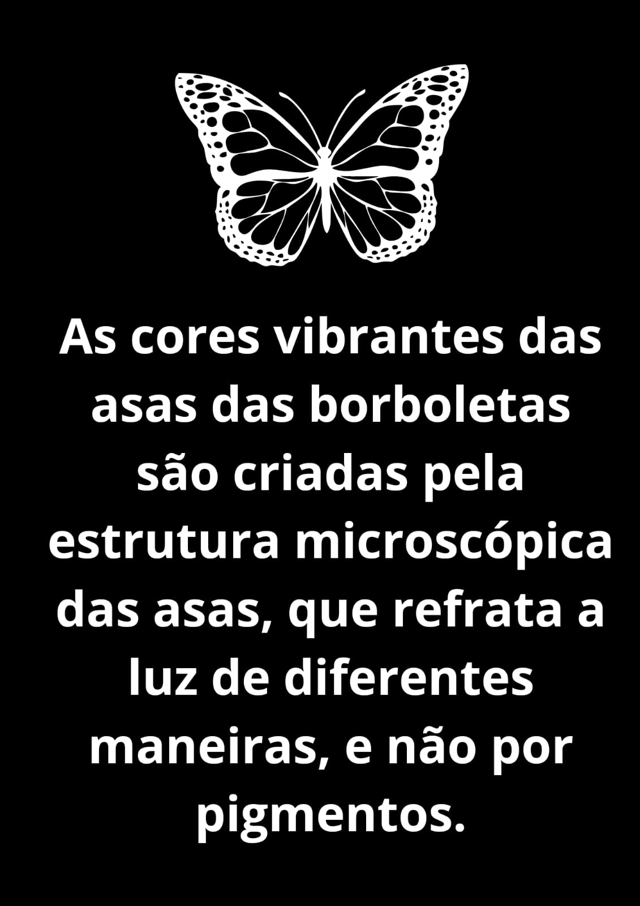

Aqui na página da ARTE PET você encontrará curiosidades do mundo animal.
Todas as informações são respaldadas por estudos científicos e observações feitas por especialistas da área.
Você sabe o motivo? Esse período prolongado é uma adaptação crucial para o desenvolvimento do filhote.
Os seres humanos tem um total de 5 milhões de células olfativas.
Nenhum tigre, assim como nós seres humanos tem listras(Digitais) idênticas.
A refratação de luz criada pelas estruturas microscópicas da borboleta criam as cores iridescentes e os padrões que vemos.
Também chamado de "tossing the fish" (lançamento do peixe).